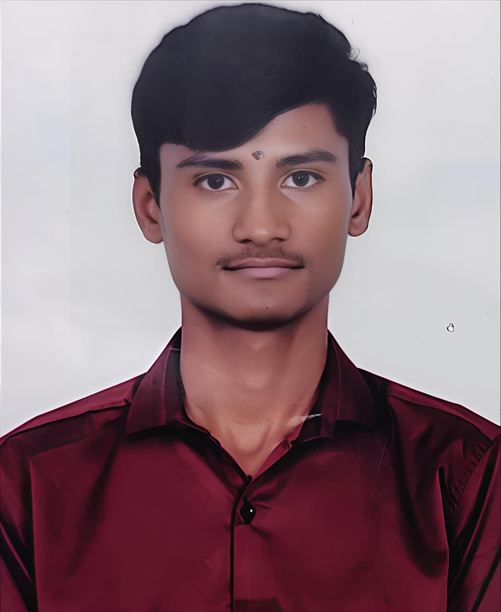
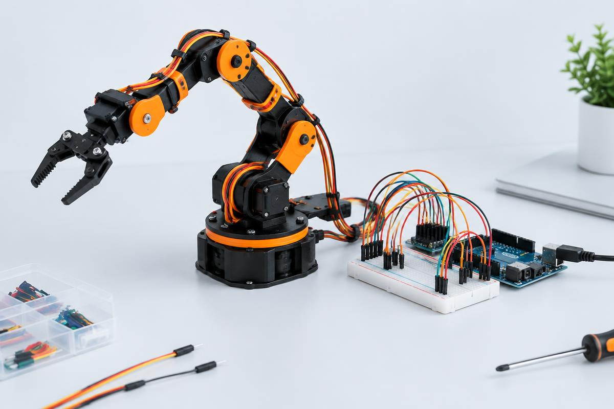

01
CardioInsight ECG Analysis
ECG signal · Neural network analysis
Analysis overviewANNImage classificationPatient data visualization
Interface concept · Cardiovascular disease detection
Hey there, I’m Lithil
Aspiring Full Stack Python Developer with an engineering heart. I turn ideas into intuitive, responsive web experiences.

A few things I’ve built, explored, and learned from.

A live web app for tracking expenses and getting a clearer view of personal spending.
I’m Bhusani Lithil, an aspiring full stack Python developer with a passion for frontend technologies and thoughtful, user-centered design.
My background in Electronics and Communication Engineering taught me to think in systems. Now, I bring that mindset to responsive web applications—connecting clean interfaces with practical, efficient solutions.
I’m currently developing my full stack skills at Teks Academy, and looking for an engineering team where I can contribute, collaborate, and keep learning.
Open to opportunities, collaborations, and a good conversation.